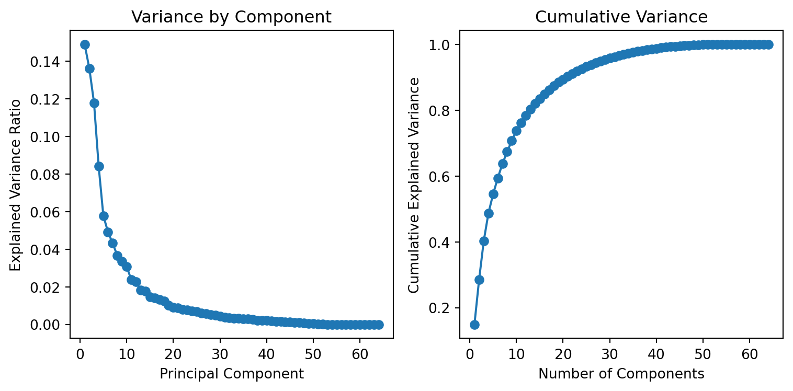
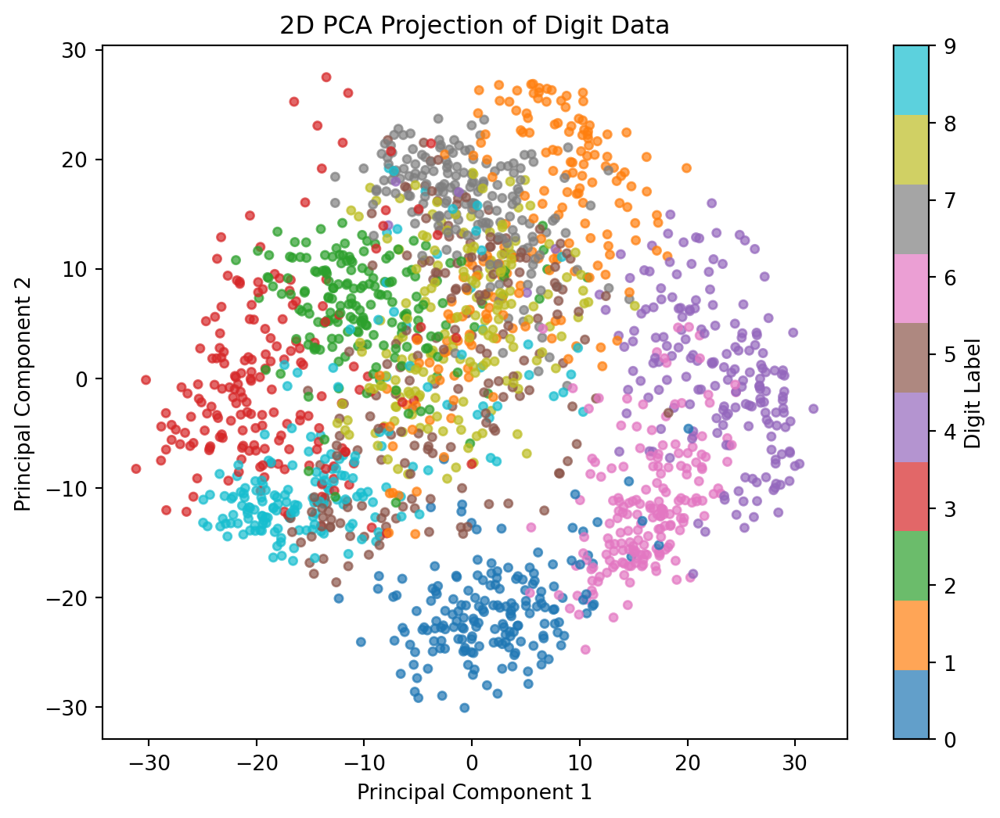
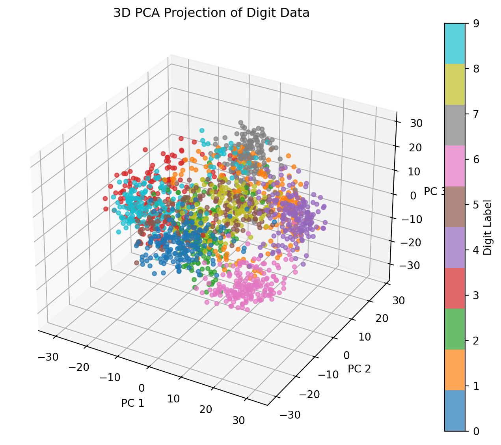
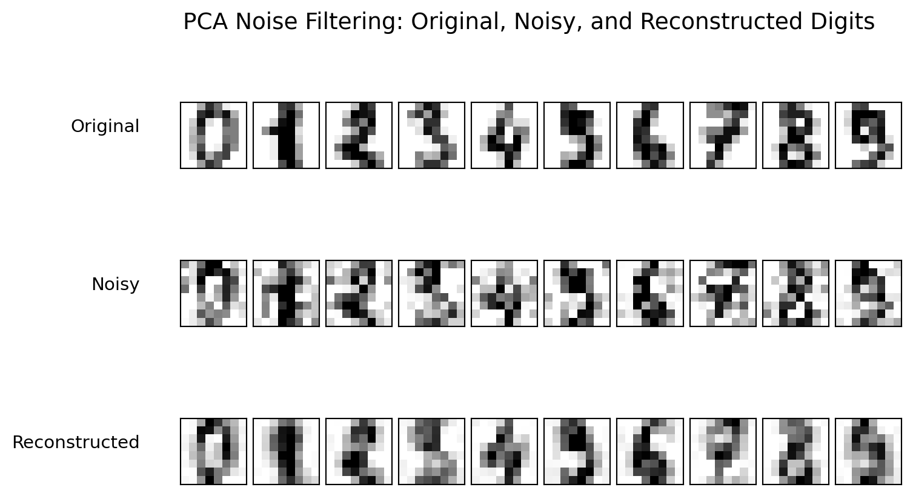

Principal Component Analysis (PCA) is a dimensionality reduction technique that transforms a dataset with potentially correlated features into a set of uncorrelated components. These components are ordered by the amount of variance each one captures, allowing PCA to summarize the data structure while retaining the most informative features. This approach is widely used in unsupervised learning, particularly for data compression and noise reduction.
11.1.1 Theory
PCA works by identifying directions, or “principal components,” along which the variance of the data is maximized. Let \(X\) be a dataset with \(n\) observations and \(p\) features, represented as an \(n \times p\) matrix. The principal components are derived from the eigenvectors of the data’s covariance matrix, representing directions of greatest variation.
Standardization: To ensure each feature contributes equally, features in \(X\) are often standardized to have zero mean and unit variance. Without this step, variables with larger scales can dominate the resulting components.
Covariance Matrix: Compute the covariance matrix \(S\) of the data as:
\[
S = \frac{1}{n-1} X_c^\top X_c,
\]
where \(X_c\) is the centered version of \(X\). This matrix measures how pairs of features vary together.
Eigenvalue Decomposition: The eigenvectors of \(S\) represent the principal components, and the associated eigenvalues quantify the variance each component captures.
Dimensionality Reduction: Select the top \(k\) eigenvectors with the largest eigenvalues and project \(X\) onto them: \[
X_{\text{reduced}} = X W_k,
\] where \(W_k\) contains these eigenvectors as columns.
The resulting lower-dimensional data retains most of the variation in \(X\).
11.1.2 Properties of PCA
PCA has several important properties that make it valuable for unsupervised learning:
Variance Maximization: The first principal component is the direction that maximizes variance in the data. Each subsequent component maximizes variance under the constraint of being orthogonal to previous components.
Orthogonality: Principal components are orthogonal to each other, ensuring that each captures unique information. This property transforms the data into an uncorrelated space, simplifying further analysis.
Dimensionality Reduction: By selecting only components with the largest eigenvalues, PCA enables dimensionality reduction while preserving most of the data’s variability. This is especially useful for large datasets.
Reconstruction: If all components are retained, the original data can be perfectly reconstructed. When fewer components are used, the reconstruction is approximate but retains the essential structure of the data.
Sensitivity to Scaling: PCA is sensitive to the scale of input data, so standardization is often necessary to ensure that each feature contributes equally to the analysis.
11.1.3 Interpreting PCA Results
The output of PCA provides several insights into the data:
Principal Components: Each principal component represents a linear combination of the original features. The loadings (or weights) for each feature indicate the contribution of that feature to the component. Large weights (positive or negative) suggest that the corresponding feature strongly influences the principal component.
Explained Variance: Each principal component captures a specific amount of variance in the data. The proportion of variance explained by each component helps determine how many components are needed to retain the key information in the data. For example, if the first two components explain 90% of the variance, then these two components are likely sufficient to represent the majority of the data’s structure.
Selecting the Number of Components: The cumulative explained variance plot indicates the total variance captured as more components are included. A common approach is to choose the number of components such that the cumulative variance reaches an acceptable threshold (e.g., 95%). This helps in balancing dimensionality reduction with information retention.
Interpretation of Component Scores: The transformed data points, or “scores,” in the principal component space represent each original observation as a combination of the selected principal components. Observations close together in this space have similar values on the selected components and may indicate similar patterns.
Identifying Patterns and Clusters: By visualizing the data in the reduced space, patterns and clusters may become more apparent, especially in cases where there are inherent groupings in the data. These patterns can provide insights into underlying relationships between observations.
PCA thus offers a powerful tool for both reducing data complexity and enhancing interpretability by transforming data into a simplified structure, with minimal loss of information.
11.1.4 Example: PCA on 8x8 Digit Data
The 8x8 digit dataset contains grayscale images of handwritten digits (0 through 9), each stored as an 8x8 grid of pixel intensities. Each pixel intensity serves as a feature, giving 64 features per image. The dataset is thus high-dimensional, yet its underlying structure is visually simple.
11.1.4.1 Loading and Visualizing the Data
We begin by loading the data and displaying a few sample images to understand its structure.
# Import required librariesimport matplotlib.pyplot as pltfrom sklearn.datasets import load_digits# Load the 8x8 digit datasetdigits = load_digits()X = digits.data # feature matrix: 64 features (8x8 pixels)y = digits.target # target labels (0-9 digit classes)# Display the shape of the dataprint("Feature matrix shape:", X.shape)print("Target vector shape:", y.shape)# Plot some sample images from the datasetfig, axes = plt.subplots(2, 5, figsize=(8, 4))for i, ax inenumerate(axes.flat): ax.imshow(X[i].reshape(8, 8), cmap='gray') ax.set_title(f"Digit: {y[i]}") ax.axis('off')plt.suptitle("Sample Images from 8x8 Digit Dataset", fontsize=16)plt.show()
Figure 11.1: Sample 8×8 grayscale images from the handwritten digit dataset.
After visualizing the data, we note:
Each digit corresponds to an 8×8 grid of pixels, forming a 64-dimensional feature space.
Despite the high dimensionality, many features (pixels) are correlated or redundant.
PCA can therefore help summarize the data while retaining essential structure.
Because the dataset is high-dimensional, PCA can address several key questions:
Dimensionality Reduction: Can we reduce the dataset’s dimensionality while preserving the essential structure of each digit? This simplification may improve visualization and computational efficiency.
Variance Explained: How many principal components are needed to capture most of the variance? Determining this shows how many features meaningfully distinguish digits.
Cluster Structure: Do distinct clusters appear in the reduced component space? Plotting the first few components may reveal natural groupings by digit class.
11.1.4.2 Performing PCA and Plotting Variance Contribution
We now apply PCA to the digit data and examine how much variance each principal component explains. This analysis helps determine the number of components that provide a good balance between dimensionality reduction and information retention.
Our goal is to identify how many components capture most of the variance. A cumulative explained variance plot will illustrate how the total variance increases as additional components are included.
# Import the PCA modulefrom sklearn.decomposition import PCAimport numpy as np# Initialize PCA without specifying the number of componentspca = PCA()X_pca = pca.fit_transform(X)# Calculate the explained variance ratio for each componentexplained_variance = pca.explained_variance_ratio_cumulative_variance = np.cumsum(explained_variance)# Plot variance contributionsfig, axes = plt.subplots(1, 2, figsize=(8, 4))# Individual explained varianceaxes[0].plot( np.arange(1, len(explained_variance) +1), explained_variance, marker="o")axes[0].set_xlabel("Principal Component")axes[0].set_ylabel("Explained Variance Ratio")axes[0].set_title("Variance by Component")# Cumulative explained varianceaxes[1].plot( np.arange(1, len(cumulative_variance) +1), cumulative_variance, marker="o")axes[1].set_xlabel("Number of Components")axes[1].set_ylabel("Cumulative Explained Variance")axes[1].set_title("Cumulative Variance")fig.tight_layout()plt.show()

Figure 11.2: Variance contribution of each principal component and cumulative explained variance for the digit dataset.
The plots in Figure 11.2 show how variance is distributed across components.
Variance by Component: The left panel displays the variance explained by each component. Components with larger contributions represent the most informative directions of variation.
Cumulative Variance: The right panel shows the cumulative variance as the number of components increases. The curve helps identify an efficient cutoff for dimension reduction.
To select the number of components:
Variance Threshold: Select the smallest number of components that explain a desired proportion of variance, such as 90% or 95%.
Elbow Method: Choose the elbow point on the cumulative variance curve, balancing compactness and representational accuracy.
In this dataset, the first 10 components account for roughly 75% of the variance, while about 50 components are required to capture nearly all variance.
11.1.4.3 PCA in Dimension Reduction
PCA can also be used to visualize high-dimensional data in a lower- dimensional space. Here we project the digit data onto the first two and first three principal components to observe how well PCA captures the underlying structure and whether the digits form distinct clusters in reduced dimensions.
from mpl_toolkits.mplot3d import Axes3Dfrom sklearn.decomposition import PCAimport matplotlib.pyplot as plt# Apply PCA for 2D and 3D projectionspca_2d = PCA(n_components=2)X_pca_2d = pca_2d.fit_transform(X)pca_3d = PCA(n_components=3)X_pca_3d = pca_3d.fit_transform(X)# 2D projectionplt.figure(figsize=(8, 6))scatter = plt.scatter(X_pca_2d[:, 0], X_pca_2d[:, 1], c=y, cmap="tab10", s=15, alpha=0.7)plt.xlabel("Principal Component 1")plt.ylabel("Principal Component 2")plt.title("2D PCA Projection of Digit Data")plt.colorbar(scatter, label="Digit Label")plt.show()# 3D projectionfig = plt.figure(figsize=(10, 7))ax = fig.add_subplot(111, projection="3d")scatter = ax.scatter(X_pca_3d[:, 0], X_pca_3d[:, 1], X_pca_3d[:, 2], c=y, cmap="tab10", s=15, alpha=0.7)ax.set_xlabel("PC 1")ax.set_ylabel("PC 2")ax.set_zlabel("PC 3")ax.set_title("3D PCA Projection of Digit Data")fig.colorbar(scatter, ax=ax, label="Digit Label")plt.show()

(a) 2D and 3D PCA projections of the 8×8 digit data, showing clustering by digit class.

(b)
Figure 11.3
The 3D projection in Figure 11.3 shows each image’s position in the space defined by the first three principal components. Several observations emerge:
Cluster Formation: Distinct clusters of points represent different digits. Digits with similar shapes, such as “1” and “7” (both often vertical), may appear closer to each other in this reduced space. This clustering suggests that PCA effectively captures structural features, even when reducing dimensions.
Effectiveness of Dimensionality Reduction: Despite reducing from 64 dimensions to only three, PCA retains essential variance, allowing for distinction between different digits. This demonstrates PCA’s utility in data compression, providing a simplified representation without losing significant information.
Exploring Further Dimensions: Additional components could capture more variance, if required. However, the first three components often capture most of the meaningful variance, balancing dimensionality reduction with information retention.
This PCA projection shows that the digit data has underlying patterns well-represented by the first few components. These findings highlight PCA’s usefulness in compressing high-dimensional data while preserving its structure, making it a valuable tool for visualization, noise reduction, and as a pre-processing step in machine learning tasks.
11.1.4.4 PCA in Noise Filtering
PCA can also be applied for denoising data by reconstructing it from a subset of principal components. Components associated with small variance often correspond to noise, so omitting them can yield a cleaner version of the data. We demonstrate this effect using the digit dataset through the following steps:
Add Random Noise: Add random noise to the original digit images.
Fit PCA to Noisy Data: Apply PCA to the noisy data, selecting enough components to retain 50% of the variance.
Reconstruct the Digits: Use PCA’s inverse transform to reconstruct the digits from the reduced components, effectively filtering out the noise.
Display the Results: Show a side-by-side comparison of the original, perturbed, and reconstructed images for visual assessment.
import numpy as npimport matplotlib.pyplot as pltfrom sklearn.decomposition import PCAfrom sklearn.datasets import load_digitsdef plot_digits(datasets, titles):""" Display 2×5 grids of digit images for each dataset in `datasets`. Parameters ---------- datasets : list of np.ndarray Each array has shape (n_samples, 64), representing different versions of the digit data (e.g., original, noisy, reconstructed). titles : list of str Titles corresponding to each dataset (e.g., ["Original", "Noisy", "Reconstructed"]). """ fig, axes = plt.subplots(len(datasets), 10, figsize=(8, 5), subplot_kw={"xticks": [], "yticks": []}, gridspec_kw=dict(hspace=0.2, wspace=0.1))for row, (data, title) inenumerate(zip(datasets, titles)):for i, ax inenumerate(axes[row]): ax.imshow(data[i].reshape(8, 8), cmap="binary", interpolation="nearest", clim=(0, 16)) axes[row, 0].set_ylabel(title, rotation=0, labelpad=25, fontsize=11, ha="right") plt.suptitle("PCA Noise Filtering: Original, Noisy, and Reconstructed Digits", fontsize=14) plt.show()# Load the digit datasetdigits = load_digits()X = digits.data# Add Gaussian noisenp.random.seed(0)noise = np.random.normal(0, 4, X.shape)X_noisy = X + noise# Fit PCA to retain 50% of total variancepca_50 = PCA(0.50)X_pca_50 = pca_50.fit_transform(X_noisy)X_reconstructed_50 = pca_50.inverse_transform(X_pca_50)# Display resultsplot_digits([X, X_noisy, X_reconstructed_50], ["Original", "Noisy", "Reconstructed"])

Figure 11.4: Noise filtering using PCA: original, noisy, and reconstructed digit images.
The visualization in Figure 11.4 highlights PCA’s ability to filter out random noise:
Original vs. Noisy Images: The second row shows the effect of added random noise, making the digits less recognizable.
Reconstructed Images: In the third row, PCA has filtered out much of the random noise, reconstructing cleaner versions of the digits while preserving important structural features. This illustrates PCA’s effectiveness in noise reduction by retaining only the principal components that capture meaningful variance.
This example illustrates PCA’s denoising mechanism: by keeping only the components with the largest variance, it suppresses random noise and retains the dominant patterns in the data. This property makes PCA useful for preprocessing, image restoration, and general noise reduction tasks.
11.2 Stochastic Neighbor Embedding
Stochastic Neighbor Embedding (SNE) is a dimensionality reduction technique used to project high-dimensional data into a lower-dimensional space (often 2D or 3D) while preserving local neighborhoods of points. It is particularly popular for visualization tasks, helping to reveal clusters or groupings among similar points. Key characteristics include:
Unsupervised: It does not require labels, relying on similarity or distance metrics among data points.
Probabilistic framework: Pairwise distances in the original space are interpreted as conditional probabilities, which SNE attempts to replicate in the lower-dimensional space.
Common for exploratory data analysis: Especially useful for high-dimensional datasets such as images, text embeddings, or genetic data.
11.2.1 Statistical Rationale
SNE aims to construct a low-dimensional representation that preserves the local neighborhood relationships observed in the original high-dimensional data. The method achieves this by matching probabilistic similarities between points across the two spaces.
For each point \(x_i\) in the high-dimensional space, SNE defines a conditional probability \(p_{j|i}\) that measures how likely \(x_j\) would be chosen as a neighbor of \(x_i\). The probability is modeled as
Denote by \(P_i = \{p_{j|i}\}_{j \neq i}\) and \(Q_i = \{q_{j|i}\}_{j \neq i}\) the conditional probability distributions for point \(i\) in the high- and low-dimensional spaces, respectively. The optimal embedding \(\{y_i\}\) minimizes the Kullback–Leibler (KL) divergence between the two conditional distributions:
This optimization encourages points that are close in the high-dimensional space to remain close in the lower-dimensional map, thus preserving local structure.
The asymmetry of the KL divergence in SNE plays a central role in how local structure is preserved. Because the divergence \(\text{KL}(P_i \| Q_i)\) penalizes situations where a true neighbor \(x_j\) (with high \(p_{j|i}\)) is assigned a low similarity \(q_{j|i}\) in the low-dimensional map, the optimization strongly discourages breaking apart neighborhoods that exist in the original space. In contrast, pairs of distant points with small \(p_{j|i}\) values contribute little to the objective even if they are mapped close together. This asymmetry biases the optimization toward accurately reproducing local relationships rather than global geometry, emphasizing cluster fidelity over large-scale distances. While this focus on local preservation is desirable for visualizing complex data manifolds, it can also cause points from different neighborhoods to become compressed together, a phenomenon known as the crowding problem.
The later t-SNE algorithm addresses this issue by symmetrizing the joint probabilities and replacing the Gaussian kernel in the low-dimensional space with a Student-\(t\) distribution to allow for heavier tails and better separation of clusters.
11.2.2 t-SNE Variation
The t-distributed Stochastic Neighbor Embedding (t-SNE) modifies SNE to overcome two major limitations: the crowding problem and the asymmetry of conditional probabilities. These refinements improve both optimization stability and visual interpretability of the resulting low-dimensional map.
The crowding problem arises because, in high-dimensional spaces, pairwise distances are more evenly distributed than can be represented in two or three dimensions. As a result, points that are moderately distant in the original space may become crowded together in the low-dimensional map. To mitigate this issue, t-SNE replaces the Gaussian kernel in the low-dimensional space with a Student-\(t\) distribution with one degree of freedom, which has heavier tails and allows distant points to remain farther apart.
To simplify computation and ensure that similarity is mutual, t-SNE also defines symmetric joint probabilities as \(p_{ij} = (p_{j|i} + p_{i|j}) / (2N)\), producing a symmetric similarity matrix.
The corresponding similarity in the low-dimensional space is defined as
t-SNE minimizes the Kullback–Leibler divergence between the joint probabilities \(\{p_{ij}\}\) and \(\{q_{ij}\}\) with respect to the embedding coordinates \(\{y_i\}\):
\[
C = \sum_{i}\sum_{j} p_{ij}\log\!\frac{p_{ij}}{q_{ij}}.
\]
By combining symmetric similarities and heavy-tailed distributions, t-SNE preserves local structure while providing enough flexibility to separate distant clusters in the low-dimensional representation.
11.2.3 Supervised Variation
While SNE and t-SNE are fundamentally unsupervised methods, they can be extended to incorporate available label information. In supervised or semi-supervised variants, the similarity structure is adjusted so that points sharing the same label are drawn closer together, whereas points from different classes are pushed apart through modified distance weights or additional penalty terms in the loss function. These extensions preserve the local manifold structure of the data while simultaneously promoting class separation in the low-dimensional embedding. Such hybrid formulations are particularly useful when partial label information is available and the goal is to combine supervised guidance with unsupervised neighborhood discovery.
11.2.4 An Example with the NIST Digits Data
Below is a brief example using t-SNE on a small subset of the MNIST digits, which is itself a curated subset of the original NIST handwritten digits data. This example illustrates how t-SNE projects high-dimensional image data—each digit represented by a 784-dimensional vector—onto a two-dimensional space. The resulting visualization reveals clusters corresponding to different digits, providing an intuitive view of how similar handwriting patterns group together in the embedding space.
Figure 11.5: t-SNE visualization of a subset of MNIST digits. Points belonging to the same digit cluster together, while visually similar digits such as 3 and 5 show partial overlap in the 2D embedding.
As shown in Figure 11.5, digits with similar handwriting styles tend to cluster together, forming visually distinct regions in the embedding space. Overlaps occur where digits share structural features, such as 3 and 5 or 4 and 9, reflecting the inherent ambiguity in handwritten data. A few scattered points often correspond to atypically written digits that t-SNE places between clusters. Overall, the visualization provides an interpretable two-dimensional summary of the high-dimensional digit images, illustrating how t-SNE preserves local similarity while maintaining global diversity in the data.